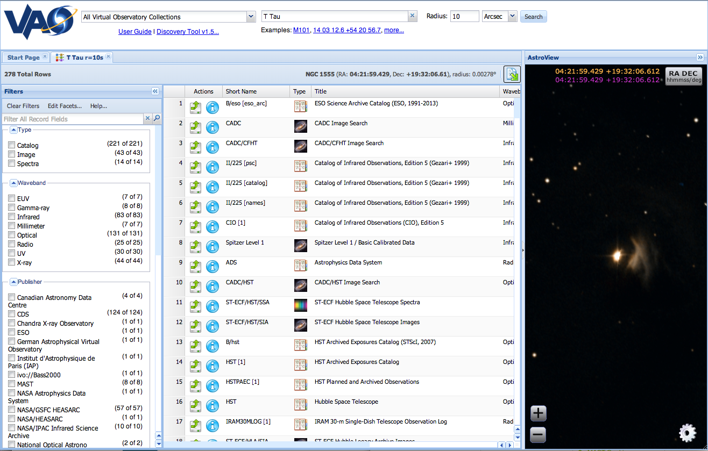
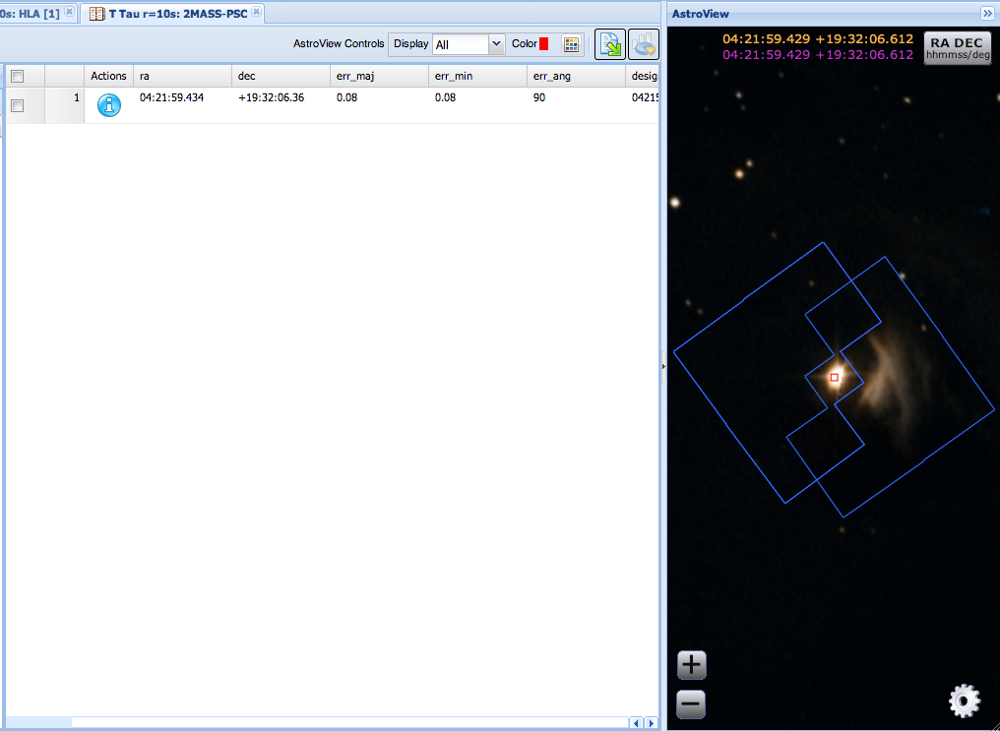

Tutorial: Data Discovery Tool
Discovering New Data on the Enigmatic T Tau Young Stellar Object
Authors: August Muench, Sarah Emery Bunn, Geoff Wallace
Version 1.5 - June, 2013
Summary
The purpose of this tutorial is to demonstrate the pan-archive search,
interrogate, data retrieval and visualization features of the Data
Discovery Tool (DDT).
A Case Study for the VAO Data Discovery Tool
T Tau is a multiple component protostar in the Taurus molecular cloud. It has companions on scales of a few arcseconds and a reflection nebula between 45" and 60" from the system (Hind’s Nebula). Motivations for studying T-Tau include:
- Can the source’s spectral energy distribution (SED) be improved using recently released measurements in infrared catalogs such as WISE or UKIDSS? [See also the VAO Iris SED tool.]
- How variable has T Tau been in the near-IR (e.g., comparing UKIDSS to 2MASS) or in the mid-IR (e.g., comparing Spitzer to WISE)?
- Are there new high-resolution images of the binary components?
Finding High Resolution Images
of T Tau
- Launch the Data Discovery
Tool (DDT), accessible from http://www.usvao.org/tools/.
- Enter “T
Tau” as the object. Name resolution of sources is
provided via various databases.
- Given the small size of the
object enter 10 and ‘Arcsec’ into the search radius
box.
The DDT conducts its searches asynchronously, meaning that new results stream in as remote services respond. Unless the query has been cached, you will need to press the "Refresh Table" button to load new results. Expect that the number of results will increase rapidly at first, but then continues to increase as more services respond.

As results stream back, a new tab (labeled ‘T Tau r=10s”) is produced in the main panel and a set of data categories (images, catalogs, etc.) is constructed in the left panel.
- Click on
‘Image’ in the Type filter.
- In order to assess what
Hubble Legacy Archive/Advanced Camera for Surveys data exist, type
‘HLA’ into the free text search box at the top of
the filters panel to narrow the results list.
- Click the Info button
 from the
"HLA [1]" row in the results panel. A popup window labeled
"Details: T Tau r=10s - Hubble Legacy Archive" will give details about
that resource.
from the
"HLA [1]" row in the results panel. A popup window labeled
"Details: T Tau r=10s - Hubble Legacy Archive" will give details about
that resource.
- From the Summary window,
click the Continue to Data button
 to
send the
results into a new table labeled “T Tau r=10s:HLA”.
(Alternatively, step 6 can be bypassed by simply clicking the
Continue to Data button available in each
row of the initial results.
to
send the
results into a new table labeled “T Tau r=10s:HLA”.
(Alternatively, step 6 can be bypassed by simply clicking the
Continue to Data button available in each
row of the initial results.
- The table returned gives
data specific to these observations; for example, the column labeled
“Exposure Time” indicates the duration of the
exposure in seconds. In particular, this table is specially recognized
by the tool and, rather than displaying only data in the grid, it knows
to present preview images inline with the data. This capability is the
exception rather than the norm at present.
- Notice that the AstroView
all-sky viewer has detected image footprints in this grid and projected
them on to the default sky survey.
- Select
an image of interest from the grid by checking the box on its row. This
visually highlights the row the corresponding footprint in AstroView.
Unselect this image and scroll to the top of the grid.
- In AstroView, click on a footprint of interest. Many footprints are actually a stack of coincidental exposures, so it is likely that several of the grid rows have been selected. This also highlights the footprints, selects their rows in the grid, and moves them to the top of the grid for easy location.
Finding Infrared Catalogs about T Tau
This example picks up from the previous one, except that instead of looking for images, one is looking for catalogs.
- Return to the first table of
results (“T Tau r=10s”) and reset the filters by
clicking on “Clear Filters” in the filters panel.
- Select
“Catalog” under the Type filter, and
“Infrared” under the Waveband filter.
- Locate the result labeled
“2MASS-PSC" and load it into a new table, as above.
- Note that the single item
returned is displayed in AstroView as a small diamond.
- You can then export the
results to one of several formats, such as CSV, by clicking the Export
button
 . From there, you can also
“broadcast” the results to SAMP-enabled
applications such as TOPCAT.
. From there, you can also
“broadcast” the results to SAMP-enabled
applications such as TOPCAT.

Last modified: June 3, 2013